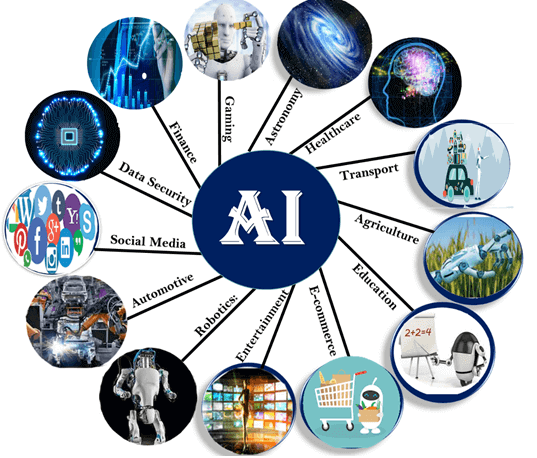

Applications And Components Of Artificial Intelligence page
Links:
Applications used by artificial intelligence:
There are important applications used by artificial intelligence, including Home security that through the facial recognition algorithm, the AI-powered home creates an index of the individuals who live in it, as well as those known through your social media connections and home visits, which helps it to distinguish between family members, guests and visitors, through this technology there will be a decrease Great in attempts to steal and enter the home, and with these security systems in addition to motion detectors, sensors and security cameras, it will be easy to assess the potential breach and even to request an emergency service. And in games so that we find that their composition and choosing between the right is not easy, so we find that the games here use all the possibilities that enable people with ease knowing what to speak, the computer has the ability to listen to people so that they know what they are talking and want, then they implement it.There is a system of vision also through the use of two-dimensional images.and it has many application in other fields.

Areas of artificial intelligence:
Artificial intelligence introduces all the technical fields that need logical thinking, knowledge, planning, and virtual perception based on applying theories and choosing the right solutions. One of the most prominent areas in which simulation programs and applications are distinguished
It is capable of performing the tasks of the human race
Development of computer programs and applications in various fields, including medicine, engineering, trade and investment, among others.
Developing cognitive simulation through testing theories, face recognition, memory activation, and other functions.
Development of engines with smart capabilities, such as driverless cars and drones.
Components of artificial intelligence:
it essentially requires specialized hardware and software to write and train algorithms for machine learning. Not a single programming language is synonymous with AI, but few are common, including Python , R, and Java.
It is consists of:
1-The data system,
which is how to represent data or a problem in a computer where it can process it and produce the appropriate results
2-Research,
which is thinking in itself as the computer searches and evaluates the options available to it according to established criteria, or he deduces them and then decides the best solution.
3-Algorithms,
which they are needed to map out how to use this information.A programming language, that is used to represent both information and algorithms and has features that are appropriate for the nature of artificial intelligence systems such as programming in logic and list of processing.
4-A programming language,
that is used to represent both information and algorithms and has features that are appropriate for the nature of artificial intelligence systems such as programming in logic and list of processing.